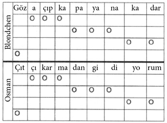

Saraydan Kız Kaçırma (1782)
Osmanlı topraklarının sıcak güney sahilinde yer alan gösterişli bir yazlık köşk. Belmonte gizlice köşkün bulunduğu bölgeye kadar gelir. Yüksek surların ardında ihtişamlı Selim Paşa Sarayı’nın deniz kıyısına dek uzandığını bilmektedir. Paşa bu gösterişli sarayında üç Batı Avrupalıyı esir tutmaktadır. Üçünü de köle tüccarı korsanlardan satın almıştır. Sarayda tutsak edilenler: İngiliz asıllı Constanze, onun hizmetçisi Blondchen ve bir de Pedrillo’dur. Constanze, İspanyol soylusu Belmonte’nin nişanlısıdır. Ne var ki saraya getirildikten kısa bir süre sonra Selim Paşa’nın gözdelerinden biri olur. Hal böyle olunca elbette kendisine haremde birtakım ayrıcalıklar da tanınır. Constanze, şişman ve yaşlı kâhya Osman’ın gözetiminde yazlık köşkün bahçesinde dilediği gibi dolaşabilmektedir. Paşa, kâhya Osman’a ele avuca sığmayan Blondchen’i armağan etmiştir. Farklı dinden olanlara sövmekten kaçınmayan huysuz kâhya Osman sık sık, “Benim de bir aklım var! Benim de bir aklım var!” diye tekrarlayarak kendini ele verir. Esirlerden üçüncüsü de Belmonte’nin uşağı Pedrillo’dur. Pedrillo, Blondchen’e sırılsıklam âşıktır, bu nedenle Selim Paşa köle pazarında ikisini de alıp saraya getirdiği için mutludur. Yazlık sarayın bahçe işlerini üstlenen Pedrillo, sevgilisi Blondchen’i sık sık görebilir. Ancak hiç şüphe yok ki Blondchen’in öfkeli sahibi Osman ile Pedrillo’nun birbirlerine karşı düşmanlığı gitgide büyür. Bu düşmanlığın altında iki neden vardır. İlk neden, Blondchen’i kıskanmaları, diğeri ise farklı inanç sistemlerine ait olmalarıdır. Aralarındaki bu kültür farkı Osman’ın düşmanca planlar yapmasına neden olur. Osman inançlarına fanatiklik derecesinde bağlıdır, adeta bir Hıristiyan canavarıdır. Hasmı Pedrillo ile karşılaşır karşılaşmaz onu azarlar. Yüzüne karşı, “Önce kafanı uçursunlar, sonra ipte sallandırsınlar, ardından kızgın şişlerde dağlayıp yaksınlar, elini kolunu bağlayıp denize atsınlar, en son da işkence etsinler” der.
Osman’ın Seslendirdiği Arya (Son Kısmı): Mozart’ın bakış açısına göre Osman basit tabiatlı bir adamdır. Otuz ölçü boyunca tepinir durur, sadece iki fon sesi eşliğinde ileri geri sövüp sayar. On altı ölçü boyunca temel nota la bemolü, on dört ölçü boyunca da hâkim olan melodi mi majör izler. Daha basit bir melodi düşünülemez bile. Şarkının melodisinde de la ve mi sesleri tekrarlanır. Ancak tempo oldukça hızlıdır “allegro assai” ve melodik yapılandırmalar da neredeyse imkânsızdır. Böylece tempo, Osman’ın çığ gibi büyüyen öfkesini ifade etmiş olur. Söylediklerini anlamak zor olsa da jestleri her şeyi anlatır.
Belmonte bu iki ana karakteri de karşılaşır. Osman bir merdivene tırmanmış, yavaş yavaş incir toplar. Keyfi yerindedir –büyük olasılıkla Blondchen’i düşünür– ve şarkılar söyleyerek insanın “sevdiğine” nasıl davranması gerektiğini anlatır. Her dörtlüğün sonunda “trallala trallala” diye tekrarlar. İlk dörtlükteki nasihatleri şöyledir: “Bir sevgilin varsa, öp onu, yarenlik et ve teselli ver, çünkü teselli etmeni gerektirecek bir şey mutlaka vardır.” Belmonte Osman’ın söylediklerini can kulağıyla dinler. İlk dörtlükten sonra daha fazla bekleyemez ve çekinerek sorar: “Burası Selim Paşa Sarayı mı?” Osman dönerek soru soran yabancıya bakar, fakat tek kelime etmeden aşk hakkında felsefe yapmaya devam eder. İkinci dörtlükteki tavsiye şudur: Eğer insan sevdiğini elde ederse, her ihtimale karşı onu kilit altında tutmalı, kapatmalıdır. Belmonte sorusunu tekrarlayınca Osman söylediği aşk şarkısını yarıda keserek sadece, “Ha?” demekle yetinir. Üçüncü dörtlükte kâhya dikkatli olunmasını salık verir. Karanlıkta, hele bir de mehtap varsa genç bir âşık peydahlanıverir ve sonra “iyi geceler sadakat”. Nihayet üçüncü dörtlüğün sonunda Osman, sabırsızlıkla bekleyen Belmonte’ye yanıt verir. Evet, burası Selim Paşa’nın evidir. Yabancı, Pedrillo ile görüşüp görüşemeyeceğini sorunca kâhya adeta köpürür: “Kafasını kazığa geçirmek gerek onun!” diye söze başlar. Belmonte ne yaparsa yapsın Osman’ı sakinleştiremez. Öfkesi gitgide büyür. Bu yabancının amacı nedir? Köylü kurnazı Osman, karşısındaki yabancının derdini çoktan anlamıştır. Elbette adam saraya sızıp, kız kaçırmak niyetindedir. Buraların güvenliğinden sorumlu olan Osman görevini yapar; yabancıya, “Çek git!” der ve köşke geri döner.
Pedrillo, efendisi Belmonte’yle karşılaşınca pek sevinir. Uşak ve efendi kucaklaşırlar. Ardından Belmonte, Pedrillo’yu soru yağmuruna tutar: Constanze hayatta mıdır? Kendisine sadık kalmış mıdır? Onunla konuşmuş mudur? Pedrillo efendisinin sorularını kısaca yanıtlar, çünkü iskeleye gitmesi gerekmektedir, Paşanın lüks sandalı kıyıya yanaşmak üzeredir. Pedrillo’nun paşa ve beraberindekileri karşılaması gerekmektedir. Pedrillo sarayda bulunduğu sürede paşanın hobileri hakkında bilgi edinmiştir. Bahçeciliğin yanı sıra mimarinin de paşanın ilgi alanları arasında olduğunu bilmektedir. Bu nedenle yeni gelen Belmonte’yi paşaya usta bir mimar olarak tanıtacaktır. Planı gayet güzel işler. Belmonte işe alınır ve nihayet sevgilisi Constanze’ye yaklaşma imkânı bulur. Selim ve Constanze baş başa konuşurlar. Selim genç kadının kendisini neden geri çevirdiğini anlayamaz. Paşa, “Seni engelleyen nedir?” diye sorup, açık yüreklilikle, “Seni ne kadar sevdiğimi biliyorsun” deyince, Constanze iyice köşeye sıkışır. Selim Paşa’nın cömertliğinden ve asil tavrından etkilense de adam sabırsızlanmaya başlamıştır ve bunu ifade etmekten kaçınmaz: “Unutma, benim emrim altındasın!” Constanze defalarca geri çevirdiği paşaya, kalbinin bir başkası için çarptığını açıkça belirtmesine ve hayatı boyunca sadık bir köle olarak kalabileceğini söylemesine rağmen, Selim Paşa kadının bu teklifini geri çevirir. Açık görüşlü biri olan paşanın içindeki diktatör birdenbire gün yüzüne çıkar. Bir gün daha sabredecek, sonrasında da kadına sahip olacaktır. Constanze hıçkıra hıçkıra aryasını söyler: “Keder kaderim oldu.” Paşa kararından vazgeçmez: “Yarın beni sevmek zorundasın!” Selim Paşa’nın tehditleri ve işkence imaları bile Constanze’nin Belmonte’ye olan sadakatini sarsmaz. Anlaşılan o ki yavaş yavaş saraydan kaçmanın vakti gelmiştir.
Diğer çift de (Blondchen ve Osman) bir araya gelerek konuşurlar. Onlar şüphesiz lafı dolandırmadan konuya girerler. Osman gayet net bir biçimde, “Burası Türkiye... Ben senin efendinim, sen de benim kölem. Ben emir veririm, sen de uyarsın!” der. İşte bu kadar. Aşk konusunda da durum böyle olacaktır. Blondchen buna karşı çıkar, bir İngiliz olarak “özgür doğmuştur” ve hiçbir şeye zorlanamaz. Ancak buna rağmen ona el sürecek olursa, gözlerini oyacaktır. Blondchen küplere biner. Görüşmenin devamında Osman’ın ağzından girer burnundan çıkar. Sonunda Osman pes eder: “Dayak yemeden gitsem iyi olur.” Şansını kaybetmiştir, çıkıp gider.
Blondchen ile Osman’ın Düeti: Müzikal anlamda da Blondchen Osman’dan baskındır. Osman son derece kalın bas bir tonda boyun eğdirmeye çalışır, ardından da sesini roket gibi yükselterek kendi kurallarını ardı ardına sıralarken, Blondchen onun böbürlenen sesini büyük bir maharetle devralarak kendi soprano sesine transpoze eder ve şöyle bir karşılık verir: “Hayır, paşa olsaydın bile olmazdı.”
Diyaloğun sonunda Osman pes eder. Melodik anlamda eko biçiminde baskılanır:

Pedrillo gizlice Blondchen’e sokulur ve kulağına Belmonte’nin sarayda olduğunu söyler. Gece yarısı hep birlikte kaçacaklardır. Kadınlar merdiven yardımıyla odalarından çıkacaklar, Belmonte ile birlikte iki kadını sarayın yakınlarında bekleyecek olan bir gemiye götüreceklerdir.
Pedrillo saraydaki koşulları gayet iyi bilmektedir. Kaçışı engelleyebilecek tek kişi ispiyoncu kâhyadır. Bu nedenle bir oyun yaparak onu devre dışı bırakmaları gerekmektedir. Ağzına damla alkol koymayan Osman’ı yoldan çıkartmak için Pedrillo’nun büyük çaba harcaması gerekecektir, çünkü Hz. Muhammed’in alkol yasağı onun için delinmez bir kuraldır. Peki, şimdi ne olacaktır? Pedrillo enfes Kıbrıs şarabından temin eder. Osman’a kendisini gammazlamayacağına, kimseye çaktırmadan evine kadar götüreceğine dair söz verir. Allah’ın geceleri uyuduğunu da söyleyince Müslüman Osman şarabın tadını yudum yudum çıkarmakta bir sakınca görmez. Osman ilk kez onunla tartışmaz. Hatta Pedrillo’ya karşı dostça hisler beslemeye bile başlar. Şarap etkisini gösterir. Sonunda Osman baş düşmanına “Kardeşim” diye hitap eder. Gecenin sonunda da Pedrillo onu sorunsuz bir biçimde evine bırakır.
Blondchen çaresizlik içindeki Constanze’ye haberi verir. Belmonte’nin sarayda olduğunu, gece yarısı sevdikleri adamların gelerek kendilerini kaçıracaklarını söyler. Kaçışa daha vakit vardır. İki çift bir araya gelir: Belmonte ve Constanze, Pedrillo ve Blondchen. Bu sırada Osman aldığı alkolün etkisiyle uyur. Her iki adam da kıskançlıktan mustariptir ve kadınlara Türk erkekleriyle aralarında gönül ilişkisi olup olmadığını sorup dururlar. Sevdikleri adamların bu tür suçlamalarda bulunması Constanze ve Blondchen’i çileden çıkarır. Adamları protesto ederler. Gerisingeri dönüp ikisini de orada bekletmeyi düşünürler, ancak kaçış saati bu kadar yaklaşmışken bunun akıllıca bir davranış olmayacağını anlarlar. Bu aptal kıskançlara yanıt vermek gerekmektedir. Constanze bunu sözlü olarak yapar: “Ah, bu sözlerinle beni nasıl da yaralıyorsun.” Blondchen ise Pedrillo’nun suratına okkalı bir tokat patlatır. İki âşık hatalarını anlayıp kadınlardan af diler.
Mozart’ın burada dinleyicisinden beklentisi büyüktür, çünkü dört kişiyi aynı anda aynı ritimde yavaşça söyletir:
Constanze: Belmonte’ye, gönlümün paşada olduğunu söylemişler.
Blondchen: Kerata, kendisine sadık kalıp kalmadığımı soruyor.
Belmonte: Constanze bana sadık kalmış, en ufak bir şüphem yok.
Pedrillo: Kesinlikle eminim ki Blondchen doğruyu söylüyor.
Gece yarısı yaklaştıkça Belmonte iyice sabırsızlanır, ancak Pedrillo’nun vereceği “işareti” beklemesi gerekir. İşaret bir romanstır, aslında sokak şarkıcılarınkine benzer sözleri olan bir serenattır. Önceden kararlaştırdıkları gibi, gece yarısı merdivenleri kadınların odalarının pencerelerine dayarlar. Âşıklar sevgililerini camdan çıkarmayı da başarırlar. Ne var ki kaçış planları başarısızlıkla sonuçlanır. Başarısız olmaları bir tek nedene bağlı değildir. Birincisi, pencereye tırmanan âşıklar fazla gürültü yaparlar, ayrıca şarabın Osman üzerindeki etkisi de beklediklerinden kısa sürer ve son aşamada kaçaklar çabucak sıvışmak yerine şarkıyı uzattıkça uzatırlar. Durumu fark eden gözcü hemen nöbetçilere haber verir: “Nöbetçiler, yetişin! Hırsız var!”
Bu çağrıyı duyan Osman da derin uykusundan uyanır. Meşalelerin aydınlattığı gecenin karanlığında kaçaklar yakalanır. Osman, Belmonte’nin rüşvet teklifini kesin bir şekilde reddeder: “Kellelerinizi istiyoruz... Bu anın gelmesini sabırsızlıkla bekledim.” Osman sevinçten oynamaya başlar ve aynı zamanda bir de şarkı söyler: “Sizi idam sehpasına çıkartıp, boynunuza ilmeği geçirdiklerinde ben bayram edeceğim.” Bu noktada kaçaklar da yaklaşan ölümün ayak seslerini duyarak endişelenmeye başlarlar. Özellikle Belmonte ve Constanze, söyledikleri uzun düette hiç değilse birlikte öleceklerini düşünerek birbirlerini teselli ederler.
Faka basmadığı için kendisiyle gurur duyan Osman, kaçmaya çalışırken yakaladığı çiftleri paşanın huzuruna çıkarır. Ancak Selim Paşa herkesi şaşırtacak bir karar verir. Açık görüşlü bir yönetici olarak hepsini affeder. Son anda can düşmanının oğlu olduğunu öğrendiği Belmonte’yi bile cezalandırmaz. Ondan babasına şunu bildirmesini ister: “Kötülüğü kötülükle cezalandırmaktansa, uğradığı haksızlık karşısında iyilik yapmak insana çok daha büyük bir haz verir.” Osman olan bitene anlam veremez. Paşa, şaşkın gözlerle etrafı süzen kâhyaya verdiği kararı kısaca şu sözlerle anlatır: “Telaşlanacak bir şey yok. İyilik yaparak kazanamadığın kişiyi başından savman gerekir.”